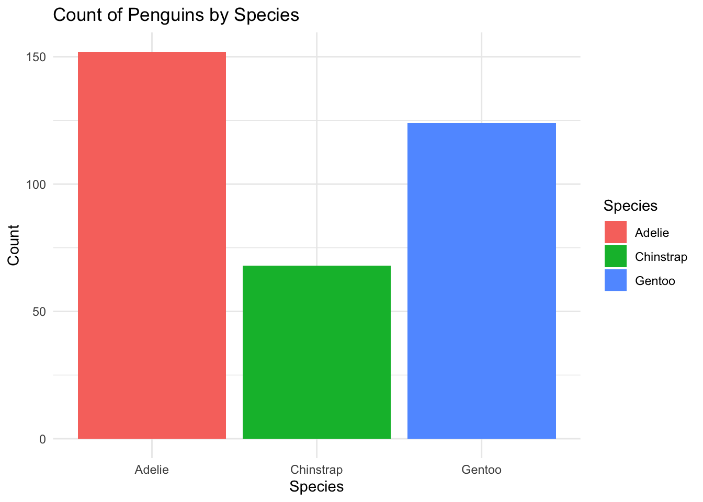
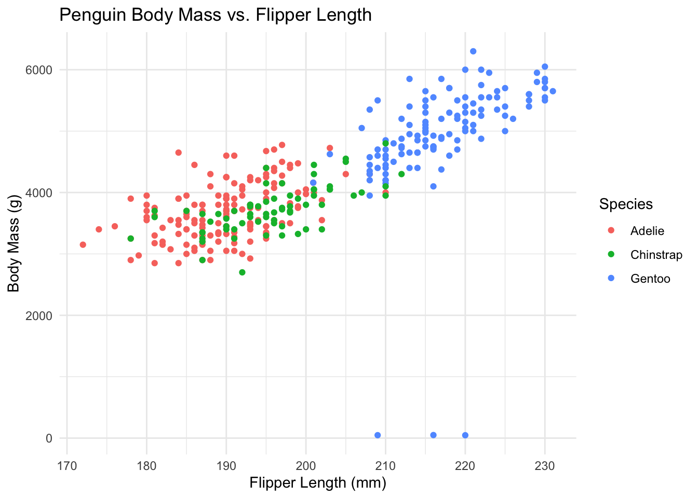

This document processes the penguins_raw_dirty.csv dataset.
It first runs an external R script to clean the data, then performs basic data analysis and visualization.
Step 1: Run the Cleaning Script
source("clean_penguins.R")
── Attaching core tidyverse packages ──────────────────────── tidyverse 2.0.0 ──
✔ dplyr 1.1.4 ✔ readr 2.1.5
✔ forcats 1.0.0 ✔ stringr 1.5.1
✔ ggplot2 3.5.1 ✔ tibble 3.2.1
✔ lubridate 1.9.4 ✔ tidyr 1.3.1
✔ purrr 1.0.4
── Conflicts ────────────────────────────────────────── tidyverse_conflicts() ──
✖ dplyr::filter() masks stats::filter()
✖ dplyr::lag() masks stats::lag()
ℹ Use the conflicted package (<http://conflicted.r-lib.org/>) to force all conflicts to become errors
Rows: 344 Columns: 17
── Column specification ────────────────────────────────────────────────────────
Delimiter: ","
chr (10): studyName, Species, Region, Island, Stage, Individual ID, Clutch ...
dbl (6): Sample Number, Culmen Depth (mm), Flipper Length (mm), Body Mass ...
date (1): Date Egg
ℹ Use `spec()` to retrieve the full column specification for this data.
ℹ Specify the column types or set `show_col_types = FALSE` to quiet this message.
[1] "Data cleaning completed! Cleaned dataset saved in Processed_data/"
This runs clean_penguins.R, which:
- Cleans the dataset
- Saves it as penguins_cleaned.csv in Processed_data/
Rows: 344 Columns: 16
── Column specification ────────────────────────────────────────────────────────
Delimiter: ","
chr (9): Species, Region, Island, Stage, Individual_ID, Clutch_Completion, ...
dbl (6): Sample_Number, Culmen_Depth_mm_, Flipper_Length_mm_, Body_Mass_g_,...
date (1): Date_Egg
ℹ Use `spec()` to retrieve the full column specification for this data.
ℹ Specify the column types or set `show_col_types = FALSE` to quiet this message.
# Rename the columns correctly based on colnames outputcleaned_data <- cleaned_data %>%rename(Flipper_Length_mm = Flipper_Length_mm_, Body_Mass_g = Body_Mass_g_ )# Standardize species names (fix typos and inconsistencies)cleaned_data <- cleaned_data %>%mutate(Species =case_when(str_detect(Species, "Adelie|AdeKie|PengTin|Pengufn|PeOguin|MPenguin") ~"Adelie",str_detect(Species, "Gentoo|Ventoo") ~"Gentoo",str_detect(Species, "Chinstrap") ~"Chinstrap",TRUE~ Species # Keep unchanged if already correct ))
This loads the cleaned dataset and renames columns.
Step 3: Data Summary
# Summary of all numeric columnssummary(cleaned_data)
Sample_Number Species Region Island
Min. : 1.00 Length:344 Length:344 Length:344
1st Qu.: 29.00 Class :character Class :character Class :character
Median : 58.00 Mode :character Mode :character Mode :character
Mean : 63.15
3rd Qu.: 95.25
Max. :152.00
Stage Individual_ID Clutch_Completion Date_Egg
Length:344 Length:344 Length:344 Min. :2007-11-09
Class :character Class :character Class :character 1st Qu.:2007-11-28
Mode :character Mode :character Mode :character Median :2008-11-09
Mean :2008-11-27
3rd Qu.:2009-11-16
Max. :2009-12-01
Culmen_Length_mm_ Culmen_Depth_mm_ Flipper_Length_mm Body_Mass_g
Length:344 Min. :13.10 Min. :172.0 Min. : 47
Class :character 1st Qu.:15.60 1st Qu.:190.0 1st Qu.:3550
Mode :character Median :17.30 Median :197.0 Median :4000
Mean :17.15 Mean :200.9 Mean :4160
3rd Qu.:18.70 3rd Qu.:213.0 3rd Qu.:4750
Max. :21.50 Max. :231.0 Max. :6300
Sex Delta_15_N_o/oo_ Delta_13_C_o/oo_ Comments
Length:344 Min. : 7.632 Min. :-27.02 Length:344
Class :character 1st Qu.: 8.307 1st Qu.:-26.29 Class :character
Mode :character Median : 8.687 Median :-25.79 Mode :character
Mean : 8.733 Mean :-25.69
3rd Qu.: 9.136 3rd Qu.:-25.09
Max. :10.025 Max. :-23.79
# Check unique values for categorical variablesunique(cleaned_data$Species)
[1] "Adelie" "Gentoo" "Chinstrap"
unique(cleaned_data$Island)
[1] "Torgersen" "Biscoe" "Dream"
unique(cleaned_data$Sex)
[1] "MALE" "FEMALE" "Unknown"
This shows basic statistics and checks for typos in categories.
Step 4: Data Visualization
Species Distribution
cleaned_data %>%count(Species) %>%ggplot(aes(x = Species, y = n, fill = Species)) +geom_col() +theme_minimal() +labs(title ="Count of Penguins by Species", y ="Count", x ="Species")

This creates a bar chart showing how many of each species are in the dataset.
Body Mass vs. Flipper Length
ggplot(cleaned_data, aes(x = Flipper_Length_mm, y = Body_Mass_g, color = Species)) +geom_point() +theme_minimal() +labs(title ="Penguin Body Mass vs. Flipper Length",x ="Flipper Length (mm)", y ="Body Mass (g)")

This creates a scatter plot comparing body mass and flipper length.
Conclusion
This document: Cleans the dataset using clean_penguins.R Loads the cleaned dataset Performs basic data summaries Visualizes key relationships
Now the dataset is ready for further analysis!
How to Run This
Once you’ve saved this file as clean_penguins_sourced.qmd, run this single command in Terminal:
quarto render clean_penguins_sourced.qmd
This runs everything—you don’t need to switch between files anymore.
The final output will be an HTML report in the same folder.